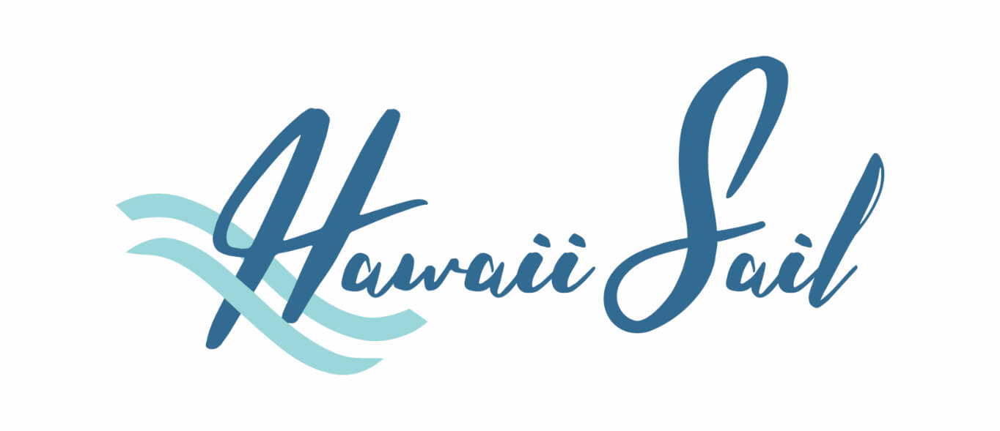
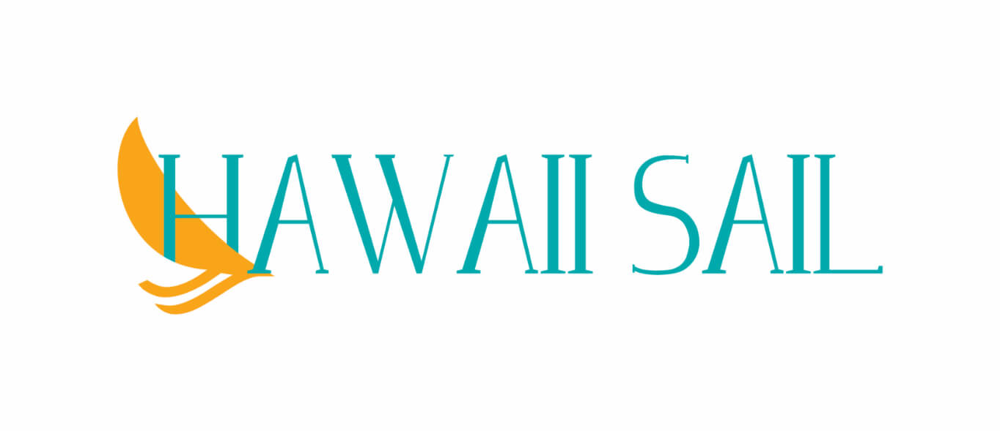
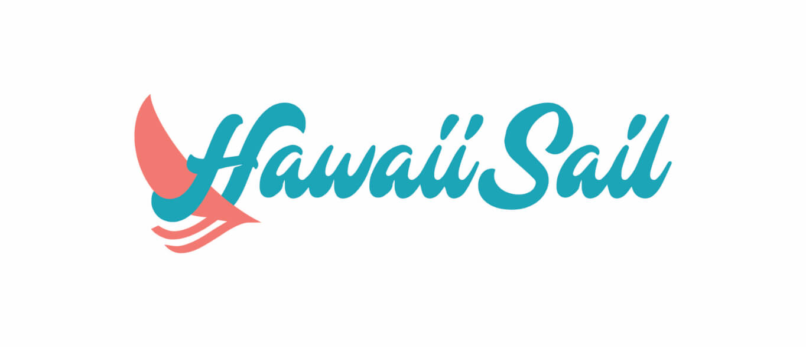

Hawaii Sail
Client
- Hawaii Sail
Project Scope
- Logo Design
- Branding & Identity Design
- Web Design
- User Experience Design
The Challenge
Can modern web design have a nostalgic retro feel to it? How can we create a visual identity that stands out in a sea of tourism, staying true to our roots and culture? Are we adding value to our customers stays here in out home?
The Solution
A two weight font family that has a home in the 21st century. The aesthetics of the typeface is a rounded grotesque sans serif take on a script that was created in 863 AD. Its modern feel gives it a soft and friendly technical character.
Strategy
The creative brief was shared during the first meeting with the client. They laid out a plan of what and how they wanted it aesthetically to look and feel. They were open to suggestions in how the brand would look. I developed my ideas from going back and looking at retro design and lifestyle. Old tv commercials and album covers. I took that inspiration and was able to create a modern take on a retro style.
This all tied into creating something catered towards out target market of visitors from the US West/East. In 2018 alone we saw 9+ million visitors, with 1.6 million being from the US West/East. In 2018 Hawaiian tourism was a $17.8b industry with $11.2b coming from the US west and east visitors.
That's a lot of cheese! I researched what the competition is doing locally, nationally, and internationally to gain a better understanding of nautical tourism.
LOGO
I went through a few iterations before the client was happy with the outcome of the logo. Like the other parts of the site, this had to have a retro feel to it, but still be clean and polished enough for 2019. After they were happy with the initial concept, I went through and did a color study for the logo, settling on the classic blue and red.
First round designs
I used waves taken off a old sailing symbol to give this a sense of motion
Second round designs
I wanted to see how a slab serif looked with a minimalistic approach to a sailboat shape
The client was most happy with this option. I made some further refinements on the sail to give it a little more character
Third round color choices
DESIGN
The identity is a fresh take on a retro idea. I used lots of duotone photos, with different blues to keep it nautical. The logo is inspired by large script font using power colors. The text is red, and the sail is two shades of blue. The design brief called for a retro feeling website. For the hero sections, I implemented duo color photos and large bold text. Since this is a site that sells tours, I used a lot of large beautiful colorful images to do some of the heavy liftings.